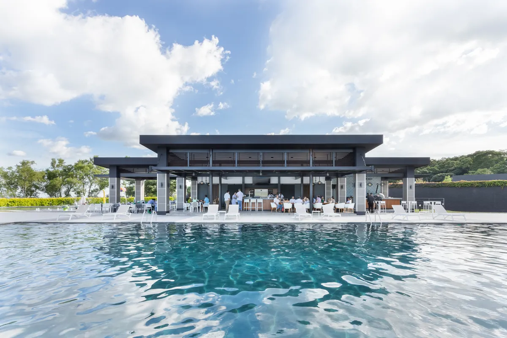

01
El Salvador
El Encanto
Master Plan + Architecture
El Salvador’s most exclusive residential and golf community, with a course designed by Perry Dye. Castillo Arquitectos led the master planning for its residential expansion and future development, through an intensive five-day participatory design process. The plan sets out a four-pillar strategy — mobility, public space, housing, and ecological landscape. The studio also led the architecture for the Casa Club renovation and expansion, and now leads new housing typologies.
View project